Candidate List 20260307 Previous Day Next Day Section 1: New Sources (age<1d) Cosmological Afterglow
Section 2: Old (1-5d) sources observed last night placeholder
Section 1: New Afterglow/FBOT Cands Last Night (3)
1. ZTF26aajsmun (Afterglow?) [Back to Top] [Share] [Trigger Swift] [Fritz ] [Lasair ]RA, Dec: 106.85048, 23.39954 7h 7m24.12s, 23d23m58.34sGalactic (l, b): 193.42542, 13.76489 WARNING: 0.86 deg from ecliptic plane ext(g-r) = 0.057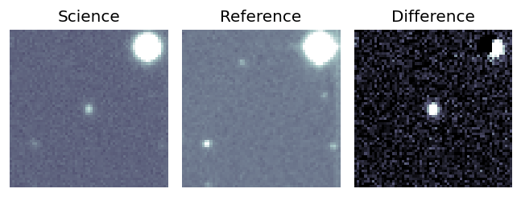
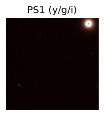
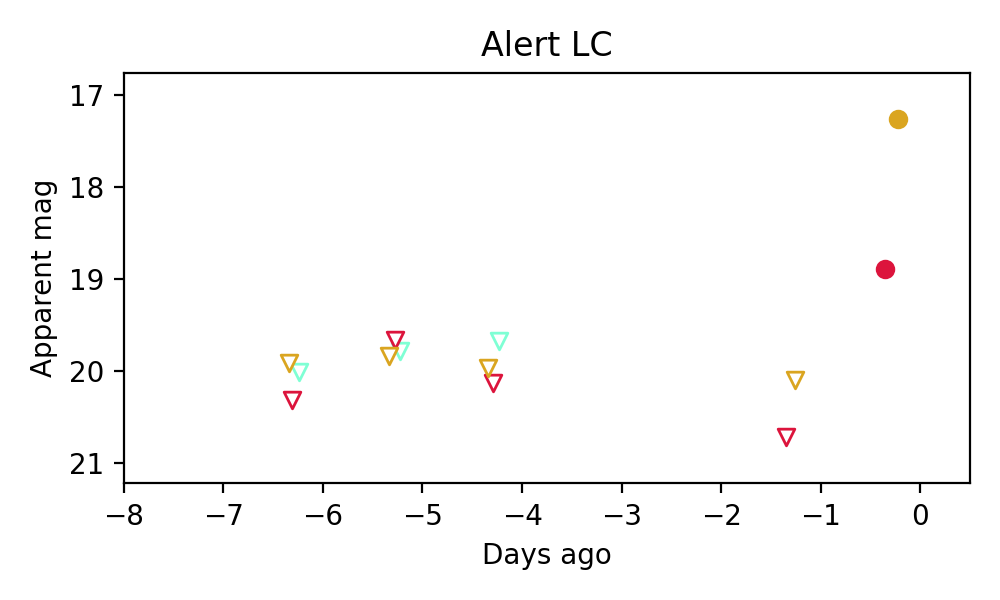
Consistent with synchrotron, g-r>0!
2. ZTF26aajsmuu (Afterglow?) [Back to Top] [Share] [Trigger Swift] [Fritz ] [Lasair ]RA, Dec: 106.52453, 23.32376 7h 6m5.89s, 23d19m25.52sGalactic (l, b): 193.37152, 13.46069 WARNING: 0.75 deg from ecliptic plane ext(g-r) = 0.05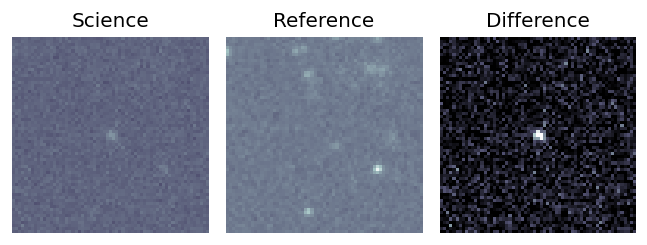
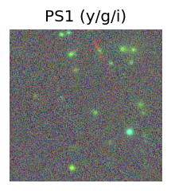
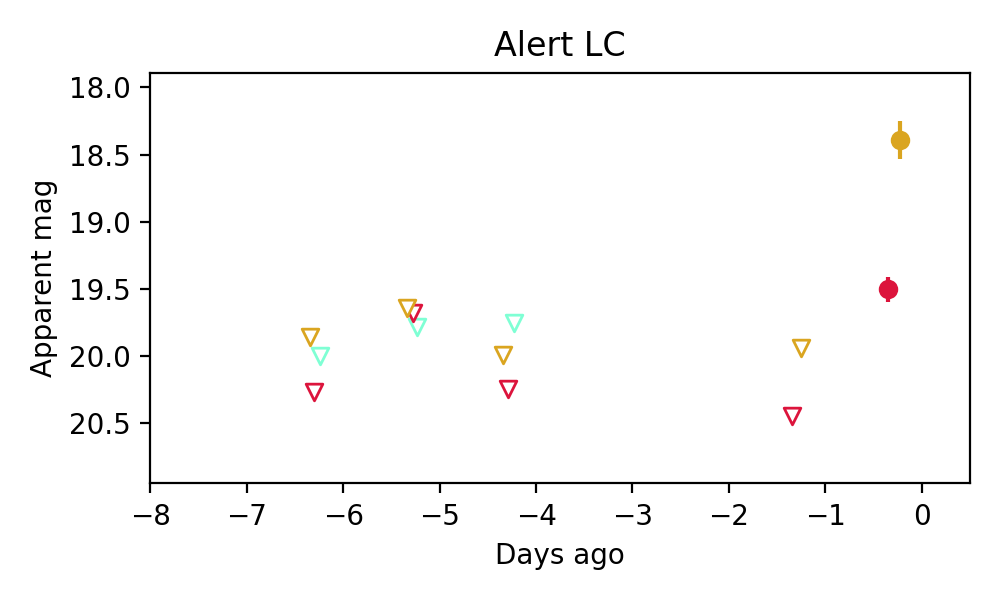
Consistent with synchrotron, g-r>0!
3. ZTF26aajsokh (Afterglow?) [Back to Top] [Share] [Trigger Swift] [Fritz ] [Lasair ]RA, Dec: 105.11612, 23.98598 7h 0m27.87s, 23d59m9.52sGalactic (l, b): 192.20899, 12.55526 WARNING: 1.27 deg from ecliptic plane ext(g-r) = 0.056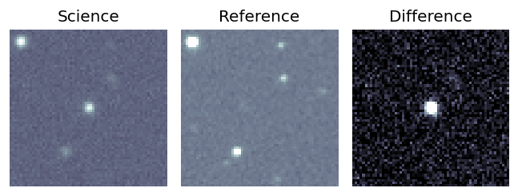
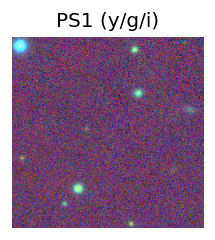
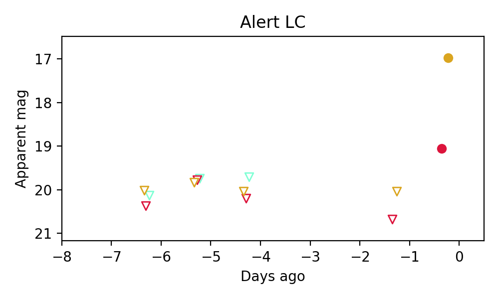
Consistent with synchrotron, g-r>0!
Section 2: Older Sources Observed Last Night (16)
0. ZTF26aaiwowr (Afterglow?) [Back to Top] [Share] [Trigger Swift] [Fritz ] [Lasair ]RA, Dec: 114.24906, 11.22184 7h36m59.77s, 11d13m18.63sGalactic (l, b): 207.88773, 15.13724 ext(g-r) = 0.037
1. ZTF26aaixbao (Afterglow?) [Back to Top] [Share] [Trigger Swift] [Fritz ] [Lasair ]RA, Dec: 79.69971, 6.59409 5h18m47.93s, 6d35m38.72sGalactic (l, b): 195.86775, -17.17857 ext(g-r) = 0.218
2. ZTF26aajdzli (Afterglow?) [Back to Top] [Share] [Trigger Swift] [Fritz ] [Lasair ]RA, Dec: 65.11364, 41.34499 4h20m27.27s, 41d20m41.97sGalactic (l, b): 159.59581, -6.18842 ext(g-r) = 0.739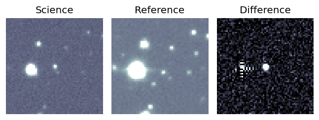
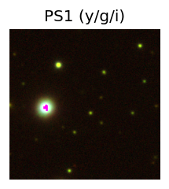
PS1: 1 source in 3 arcsec Closest: d = 4.31 arcsec photoz=0.73+/-0.16 peak abs mag = -27.28 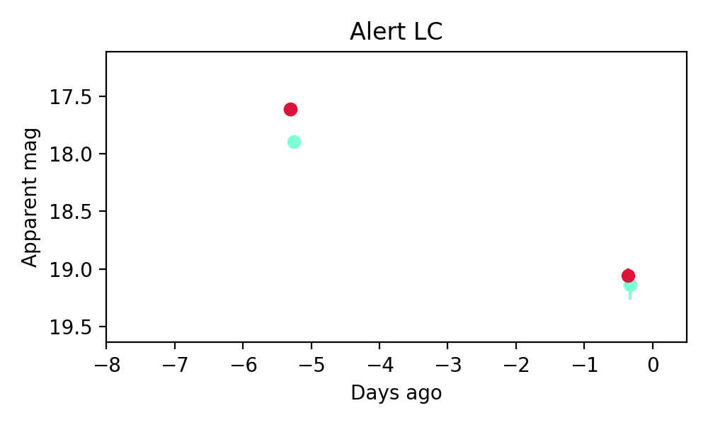
3. ZTF26aajilre (Afterglow?) [Back to Top] [Share] [Trigger Swift] [Fritz ] [Lasair ]RA, Dec: 107.86763, 31.18721 7h11m28.23s, 31d11m13.94sGalactic (l, b): 186.32884, 17.61325 ext(g-r) = 0.076LegacySurvey: 1 sources in 3 arcsec Closest: d = 2.63 arcsec, 329.2 deg (east of north) photoz=0.01 (68% bounds 0.01, 0.02), type=PSF peak abs mag = -14.52 (68% bounds -13.98, -15.91) Consistent with synchrotron, g-r>0!
4. ZTF26aajjukk (FBOT?) [Back to Top] [Share] [Trigger Swift] [Fritz ] [Lasair ]RA, Dec: 102.58635, -20.97449 6h50m20.72s, -20d-58m-28.17sGalactic (l, b): 231.6591, -9.62401 ext(g-r) = 0.36PS1: 1 source in 3 arcsec Closest: d = 8.03 arcsec photoz=0.20+/-0.06 peak abs mag = -24.87
5. ZTF26aajlnqv (FBOT?) [Back to Top] [Share] [Trigger Swift] [Fritz ] [Lasair ]RA, Dec: 28.78616, 26.76583 1h55m8.68s, 26d45m56.98sGalactic (l, b): 140.11526, -33.97125 ext(g-r) = 0.075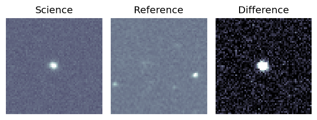
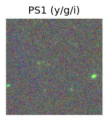
LegacySurvey: 1 sources in 3 arcsec Closest: d = 0.21 arcsec, 92.7 deg (east of north) photoz=0.96 (68% bounds 0.71, 1.15), type=REX peak abs mag = -27.44 (68% bounds -26.66, -27.94) 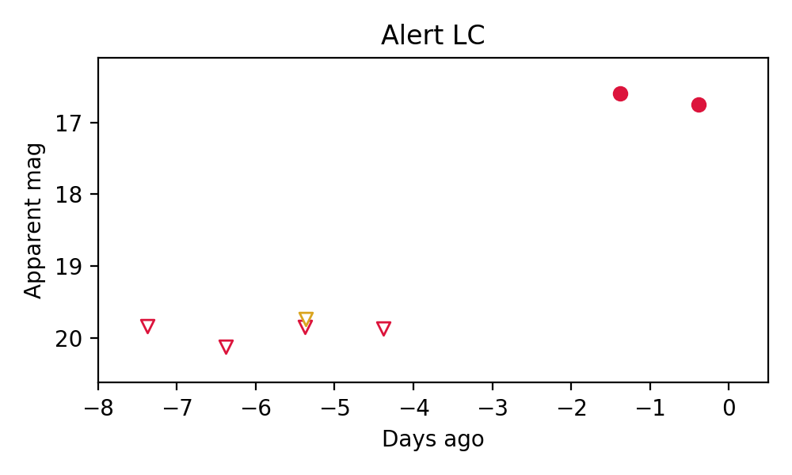
6. ZTF26aajnagb (Afterglow?FBOT?) [Back to Top] [Share] [Trigger Swift] [Fritz ] [Lasair ]RA, Dec: 141.35741, 55.59467 9h25m25.78s, 55d35m40.81sGalactic (l, b): 160.5476, 43.57091 ext(g-r) = 0.026peak abs mag = -22.19 LegacySurvey: 1 sources in 3 arcsec Closest: d = 0.33 arcsec, 298.6 deg (east of north) photoz=0.17 (68% bounds 0.08, 0.24), type=EXP peak abs mag = -20.67 (68% bounds -18.86, -21.43) Consistent with synchrotron, g-r>0!
7. ZTF26aajndtg (FBOT?) [Back to Top] [Share] [Trigger Swift] [Fritz ] [Lasair ]RA, Dec: 154.8573, -15.32936 10h19m25.75s, -15d-19m-45.69sGalactic (l, b): 257.34823, 33.76593 ext(g-r) = 0.082PS1: 1 source in 3 arcsec Closest: d = 0.18 arcsec photoz=0.10+/-0.01 peak abs mag = -19.90
8. ZTF26aajppuq (FBOT?) [Back to Top] [Share] [Trigger Swift] [Fritz ] [Lasair ]RA, Dec: 259.71517, 56.07544 17h18m51.64s, 56d 4m31.59sGalactic (l, b): 84.14032, 35.00105 ext(g-r) = 0.027peak abs mag = -19.67 LegacySurvey: 1 sources in 3 arcsec Closest: d = 2.11 arcsec, 276.2 deg (east of north) photoz=0.43 (68% bounds 0.21, 0.79), type=EXP peak abs mag = -22.65 (68% bounds -20.92, -24.25) Consistent with synchrotron, g-r>0!
9. ZTF26aajqjzy (Afterglow?) [Back to Top] [Share] [Trigger Swift] [Fritz ] [Lasair ]RA, Dec: 24.31287, 5.5427 1h37m15.09s, 5d32m33.73sGalactic (l, b): 143.3555, -55.50187 WARNING: -4.27 deg from ecliptic plane ext(g-r) = 0.029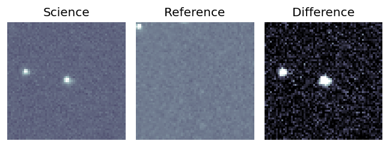
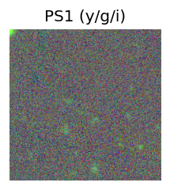
LegacySurvey: 1 sources in 3 arcsec Closest: d = 1.44 arcsec, 191.0 deg (east of north) photoz=0.68 (68% bounds 0.44, 1.1), type=REX peak abs mag = -26.78 (68% bounds -25.65, -28.07) 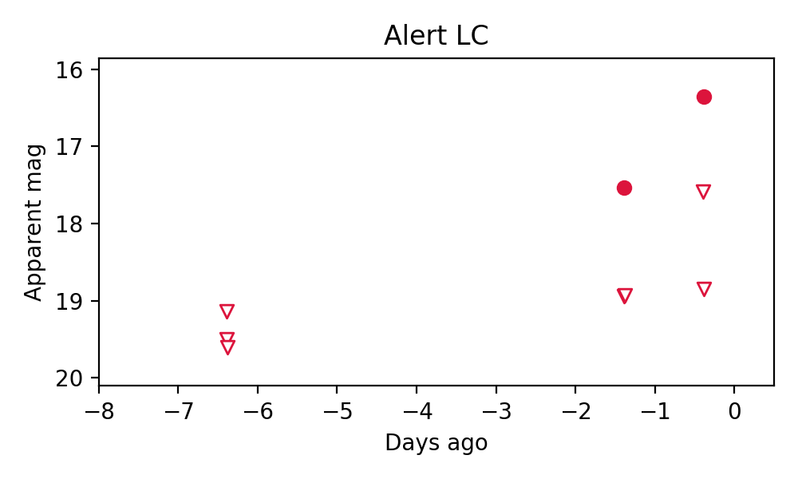
10. ZTF26aajqkwh (Afterglow?) [Back to Top] [Share] [Trigger Swift] [Fritz ] [Lasair ]RA, Dec: 31.79273, 4.59985 2h 7m10.25s, 4d35m59.45sGalactic (l, b): 155.76071, -53.37503 ext(g-r) = 0.046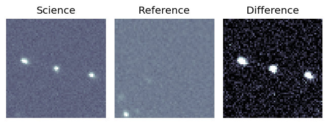
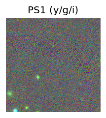
LegacySurvey: 1 sources in 3 arcsec Closest: d = 2.33 arcsec, 274.5 deg (east of north) photoz=1.11 (68% bounds 0.95, 1.26), type=PSF peak abs mag = -27.55 (68% bounds -27.13, -27.89) 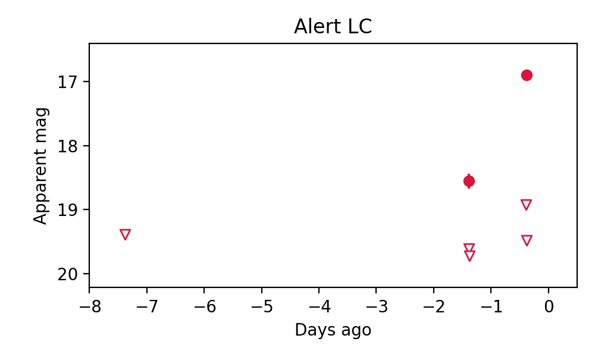
11. ZTF26aajqmgk (FBOT?) [Back to Top] [Share] [Trigger Swift] [Fritz ] [Lasair ]RA, Dec: 15.20147, 13.11069 1h 0m48.35s, 13d 6m38.49sGalactic (l, b): 126.45951, -49.69688 ext(g-r) = 0.052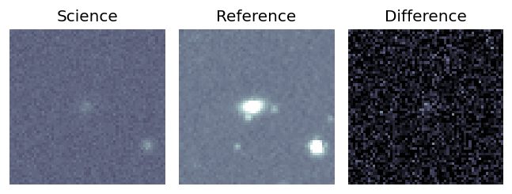
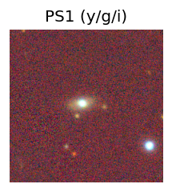
peak abs mag = -21.62 LegacySurvey: 1 sources in 3 arcsec Closest: d = 2.06 arcsec, 73.6 deg (east of north) photoz=0.11 (68% bounds 0.08, 0.17), type=SER peak abs mag = -20.53 (68% bounds -19.78, -21.42) 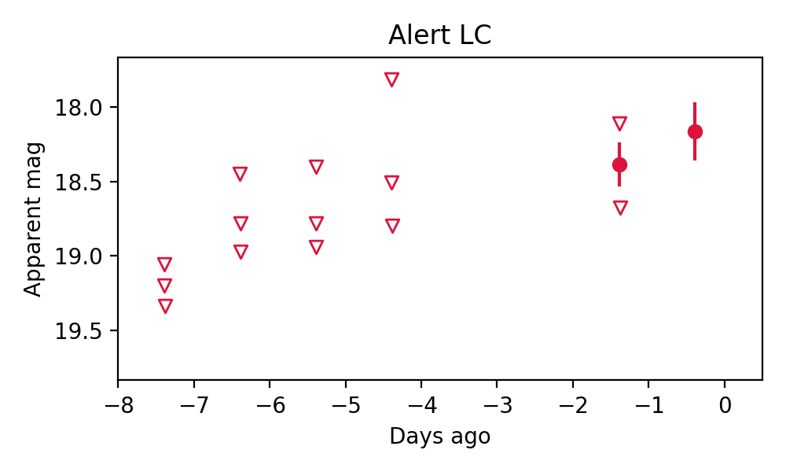
12. ZTF26aajryzn (FBOT?) [Back to Top] [Share] [Trigger Swift] [Fritz ] [Lasair ]RA, Dec: 160.4074, 3.54699 10h41m37.77s, 3d32m49.17sGalactic (l, b): 244.49287, 51.05774 WARNING: -4.38 deg from ecliptic plane ext(g-r) = 0.037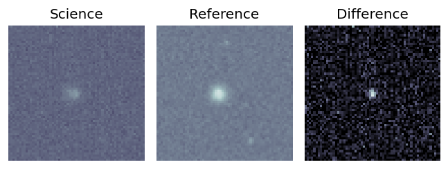
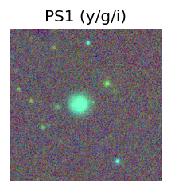
LegacySurvey: 1 sources in 3 arcsec Closest: d = 0.49 arcsec, 74.9 deg (east of north) photoz=0.27 (68% bounds 0.16, 0.44), type=EXP peak abs mag = -21.41 (68% bounds -20.17, -22.61) 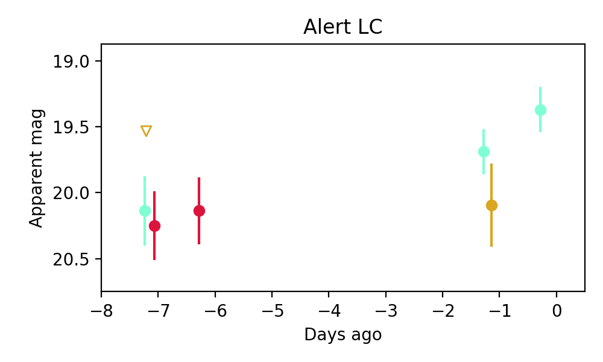
Consistent with synchrotron, g-r>0!
13. ZTF26aajtjzf (Afterglow?) [Back to Top] [Share] [Trigger Swift] [Fritz ] [Lasair ]RA, Dec: 162.89528, -8.23791 10h51m34.87s, -8d-14m-16.47sGalactic (l, b): 259.29933, 44.24591 ext(g-r) = 0.037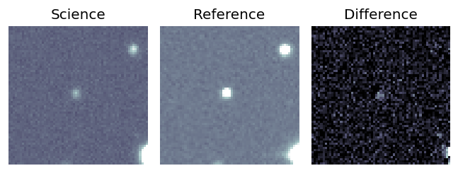
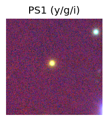
LegacySurvey: 1 sources in 3 arcsec Closest: d = 1.07 arcsec, 292.6 deg (east of north) photoz=0.57 (68% bounds 0.4, 0.88), type=REX peak abs mag = -24.16 (68% bounds -23.22, -25.29) 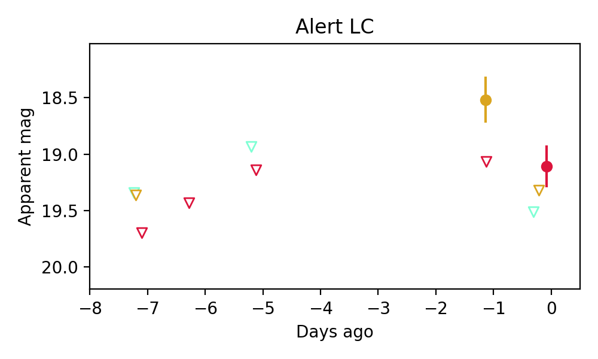
14. ZTF26aajucfv (Afterglow?FBOT?) [Back to Top] [Share] [Trigger Swift] [Fritz ] [Lasair ]RA, Dec: 140.37647, 77.6384 9h21m30.35s, 77d38m18.24sGalactic (l, b): 134.77292, 34.15572 ext(g-r) = 0.018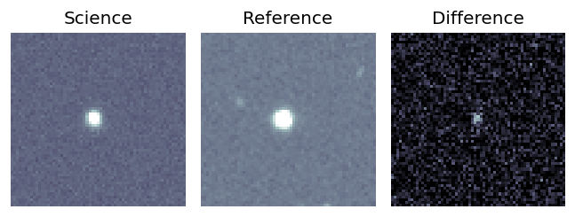
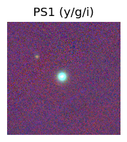
LegacySurvey: 1 sources in 3 arcsec Closest: d = 1.28 arcsec, 66.9 deg (east of north) photoz=0.13 (68% bounds 0.11, 0.15), type=PSF peak abs mag = -19.91 (68% bounds -19.53, -20.24) 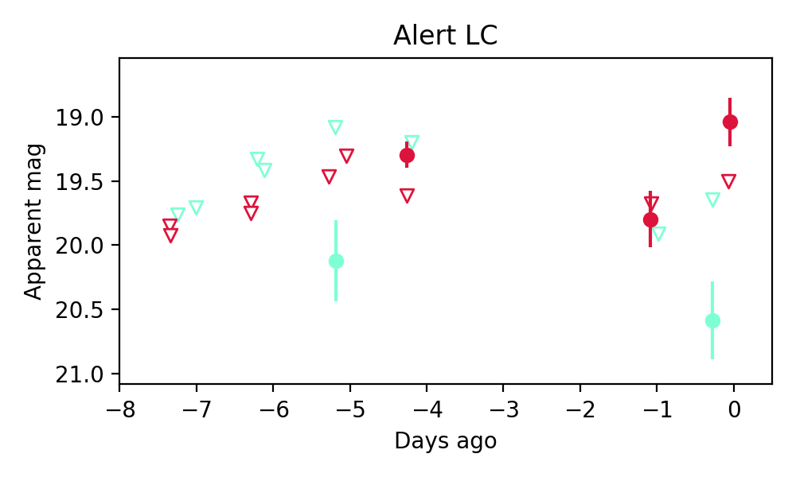
Consistent with synchrotron, g-r>0!
15. ZTF26aajuesy (FBOT?) [Back to Top] [Share] [Trigger Swift] [Fritz ] [Lasair ]RA, Dec: 304.79752, 69.14556 20h19m11.40s, 69d 8m44.03sGalactic (l, b): 102.62435, 17.92321 ext(g-r) = 0.444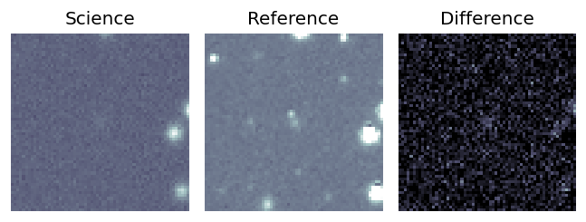
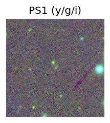
PS1: 1 source in 3 arcsec Closest: d = 0.59 arcsec photoz=0.43+/-0.14 peak abs mag = -23.58 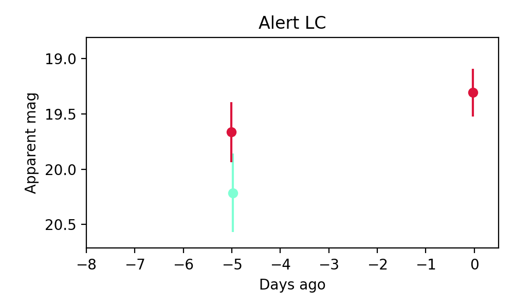
Consistent with synchrotron, g-r>0!